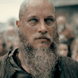

Scandinavie, à la fin du 8ème siècle. Ragnar Lodbrok, un jeune guerrier viking, est avide d'aventures et de nouvelles conquêtes. Lassé des pillages sur les terres de l'Est, il se met en tête d'explorer l'Ouest par la mer. Malgré la réprobation de son chef, Haraldson, il se fie aux signes et à la volonté des dieux, en construisant une nouvelle génération de vaisseaux, plus légers et plus rapides...Hormis le fait qu'il soit un guerrier hors pair, il est ouvert au monde et très curieux. D'ailleurs aidé de ses amis et de son frère Rollo, il a déjà fait la conquête des terres de l'est. Mais voilà, contrairement à son jarl et à tout son peuple, il est persuadé que des terres pourvues de grandes richesses se trouvent à l'ouest.
|  | Ragnar Lothbrok | Ragnar Lothbrok est un fermier et un viking qui pense être destiné à un grand avenir. Insatisfait par la politique de son Jarl, lassé de piller les terres de l'est, vide de toutes richesses et de défis, il décide de mener une expédition secrète vers les terres de l'Ouest. Pour ce fait, il demande à son meilleur ami Floki de construire un nouveau type de bateau. |
| Rollo Lothbrok | Rollo est le frère aîné de Ragnar Lothbrok.Il accompagne son frère dans les premières expéditions à l'Ouest et le suit dans ses aventures. Sa jalousie envers lui ont mis à rude épreuve leur relation et l'entraîna dans des situations troubles et lourdes de conséquences | |
| Ivar | Ivar est le quatrième et dernier fils de Ragnar et Aslaug. Il naît avec des jambes chétives, qui ne lui permettent pas de marcher. Il l'abandonne dans la forêt, mais Ivar est retrouvé par sa mère Aslaug. |